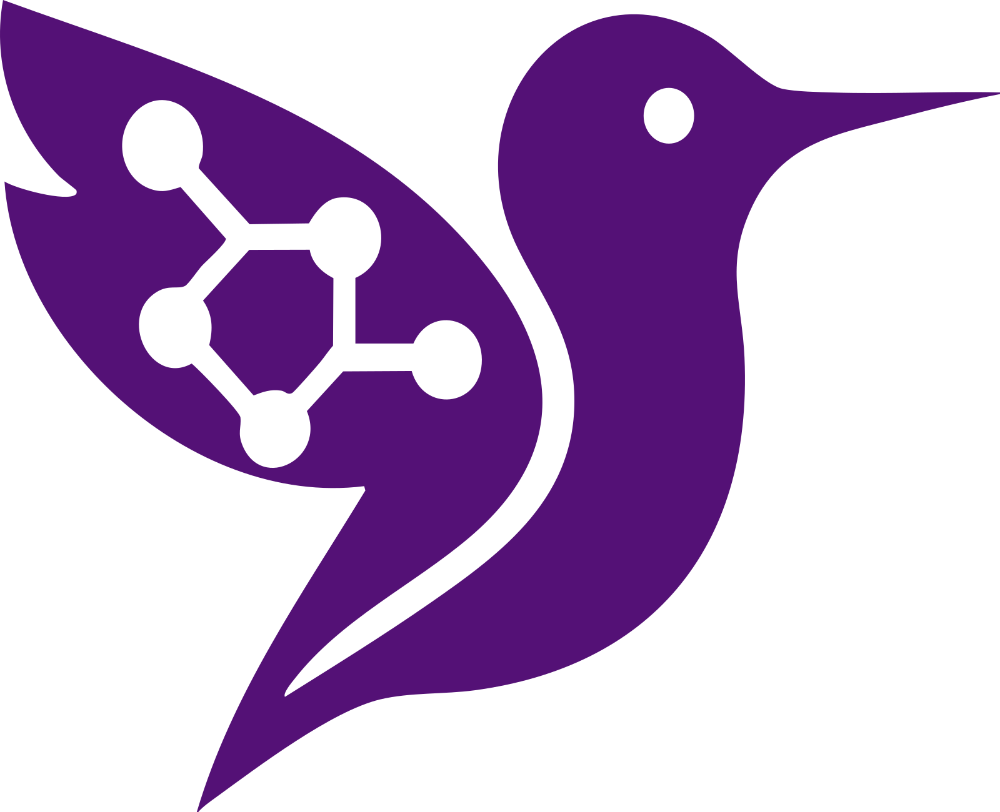

Inclinación máxima
14,64°
PID IA; PID normal: 15,95°
PerceptIAModelo digital + control de equilibrio
Entorno educativo para estudiar el péndulo invertido, comparar controladores en 2D y trasladar las hipótesis a ROS 2 y Gazebo antes de trabajar con el Tumbller físico.
El PID adaptativo mezcla tres expertos transparentes: equilibrio, recuperación y corrección de deriva. En el escenario por defecto reduce el error angular y la deriva final, pero exige un pico de motor mayor.
14,64°
PID IA; PID normal: 15,95°±1,2 m/s
Límite del modelo 2D, no medición física133,3 rpm
Pico equivalente del PID IA0,094 m
PID normal: 0,129 m| Métrica simulada | PID normal | PID IA | Lectura |
|---|---|---|---|
| Caída en 12 s | No | No | Empate en este escenario |
| Pico de inclinación | 15,95° | 14,64° | 8,2% menor |
| IAE angular | 1,5025 | 1,3484 | 10,3% menor |
| Deriva final |x| | 0,129 m | 0,094 m | 26,6% menor |
| Pico equivalente de motor | 100,9 rpm | 133,3 rpm | 32,1% mayor |
El mismo ciclo conceptual conecta el banco 2D y Gazebo: observar la inclinación, calcular la corrección, limitar el comando y mover ambas ruedas para recuperar la vertical.
Péndulo invertido sobre dos ruedas, con centro de masa por encima del eje.
Publica orientación y velocidad angular del chasis en la simulación Gazebo.
El puente ros_gz entrega la IMU al nodo de control y distribuye telemetría.
Calcula aceleración y la integra como velocidad de rueda con límites de seguridad.
Los controladores de joints aplican velocidad a las ruedas izquierda y derecha.
La base debe acelerarse hacia la caída para llevar el punto de apoyo bajo el centro de masa. El modelo 2D integra la dinámica no lineal con Runge-Kutta de cuarto orden cada 5 ms.
El PID normal mantiene ganancias fijas. El PID IA conserva el núcleo PID, pero combina las ganancias de tres expertos mediante pesos calculados a partir de |θ|, |θ̇| y |x|. Es una compuerta heurística transparente; todavía no es una red entrenada.
La animación usa el CSV generado por el banco 2D. Sus controles de reproducción, reinicio, velocidad y tiempo se conservan dentro del módulo interactivo.
Todos los enlaces se sirven desde el mismo repositorio y pueden compartirse con las estudiantes.
El repositorio es una plataforma de preparación. La validación útil en hardware comienza cuando se sustituyen las aproximaciones geométricas y dinámicas por mediciones del robot real.